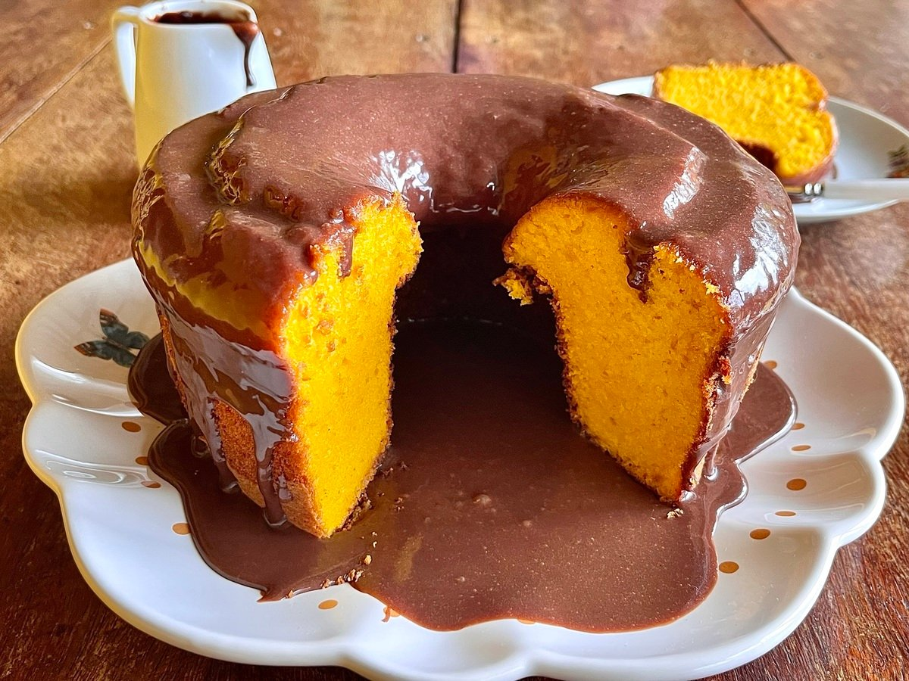

Inicio
Tipos de Bolos
Bolos Gourmet
Bolos Vulcão
Bolos Caseiros
Buscar
<
Cadastre seu Bolo

Bolo de cenoura
Igredientes da massa
3 cenouras médias (cerca de 360 gramas) descascadas e cortadas em rodelas
4 ovos
1 xícara de chá de óleo de milho (240 ml)
1 e 1/2 de chá de açúcar
2 xícara de chá de farinha de trigo (280 gramas)
1 colher de sopa de fermenro químico em pó (fermento para bolo) (14 gramas)
1 pitada de sal (1/4 de colher de chá)
Manteiga e farinha de trigo para untar
Igredientes da calda
1 caixa de leite condensado (395 gramas)
1 colher de sopa de manteiga sem sal (14 gramas)
4 colheres de sopa de chocolate em pó (ou 7 colheres de sopa de achocolatado)
1/2 caixinha de creme de leiet (100 gramas)
Modo de preparo da massa
Reúna todos os ingredientes da massa do seu bolo de cenoura de liquidificador.
Em um recipiente, peneire a farinha (para deixar seu bolo mais leve, sem grumihos) e misture com o sal e fermento. Reserve;
No liquidificador, coloque as cenouras, o óleo, os ovos e o açúcar. Bata por cerca de 5 minutos e despeje a mistura em um recipiente grande
Gradualmente, vá adicionando a mistura de ingredientes secos e, com o auxílio de um fouet, vá misturando até tudo incorporar.
Assim que ficar homogêneo, transfira para uma forma, untada e enfarinha, e leve ao forno preaquecido a 180ºC por cerca de 45 a 50 minutos.
Modo de preparo da calda e finalização
Reúna todos os ingredientes da cobertura.
Em uma panela, coloque todos os ingredientes (menos o creme de leite) e misture bem.
Leve ao fogo médio e mexa sem parar até atingir o ponto de brigadeiro (quando começa a desgrudar do fundo da panela). Depois, é só desligar o fogo, juntar o creme de leite e misturar até incorporar.
Assim que o bolo mornar, desenforme e despeje a cobertura por cima;
Agora é só decorar (se quiser) e servir. Bom apetite!